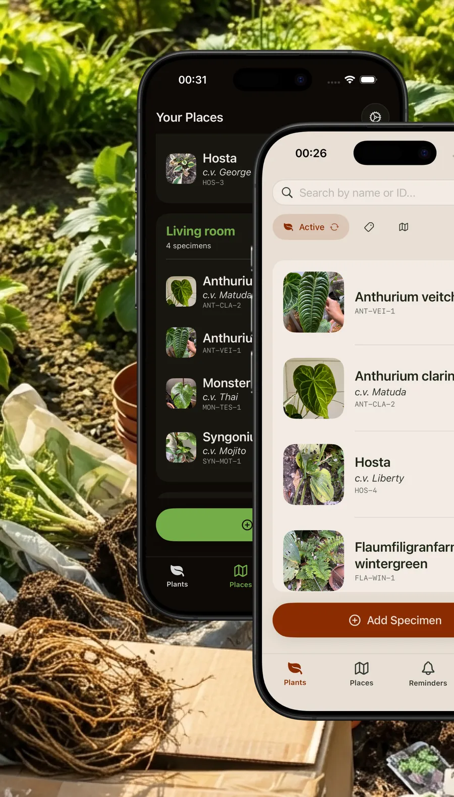
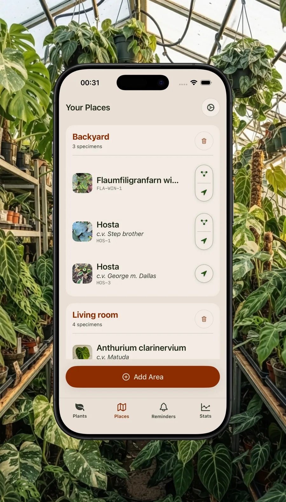
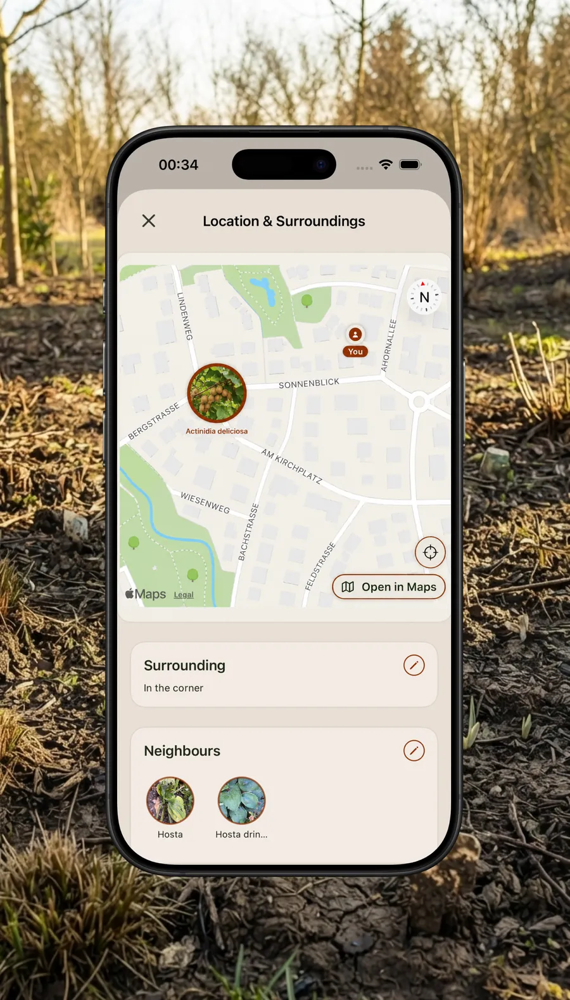
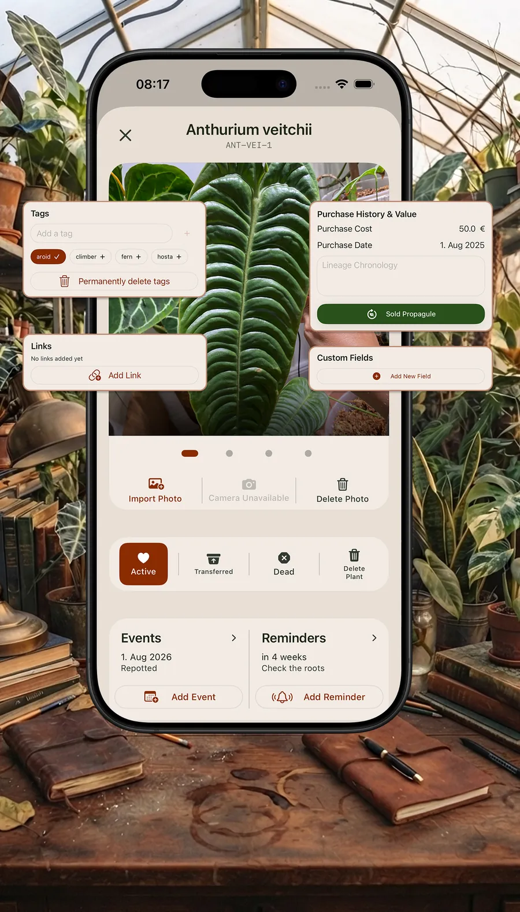
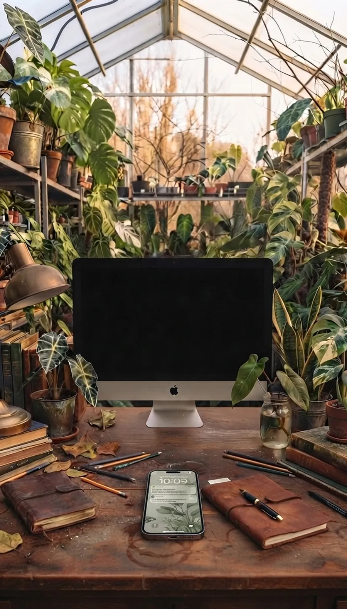

Your collection, perfectly indexed
Every plant gets its own entry with photos, cultivar and a short ID code. Search by name or ID and find any plant in seconds, however big your collection grows.

Do you have a lot of plants? (I mean, really a lot!) Do you know their exact names, keep track of their lineage, and watch proudly as every new leaf unfolds?
If your collection has long outgrown casual notes, Arkusch is for you. It’s a dedicated database and tracking system built for serious plant collectors who manage large indoor jungles or complex outdoor gardens.
Unlike apps designed for beginners, Arkusch skips the generic watering alerts and plant ID detectors—because you already know how to care for your collection. Instead, it gives you professional-grade, reliable tools to record your botanical treasures with precision, without the admin ruining the fun.
For iPhone, iPad and Mac. Free to start.
Every plant gets its own entry with photos, cultivar and a short ID code. Search by name or ID and find any plant in seconds, however big your collection grows.

Sort plants into rooms, beds and areas, from the living-room shelf to the backyard, and see at a glance what lives where.

Never lose a dormant specimen again. Pin outdoor plants with GPS coordinates. When GPS isn't precise enough, check which plants stand nearby. That is a lifesaver when a plant has vanished in winter and the tags have faded.

Events, links, tags, purchase history and custom fields on every plant. Skip generic “water me” alerts: create your own tasks with your own instructions, like “Check root health in 3 months” or “Apply systemic treatment”.

Take photos and set GPS pins on your phone while you're out with the plants, then edit the details on the big screen. Full iCloud sync keeps every device up to date.
The Mac app is on its way.

Even a plant you've lost stays in your records. Review the Graveyard to learn what happened and improve your care.
Import your existing lists with CSV and export your data whenever you like.
The whole app is available in English, German and Ukrainian.
Record your whole collection for free. Test the PRO features on your first 50 plants, then decide whether to unlock them for the entire collection.
No plant limit, no time limit.
Included for your first 50 plants.
After 50 plants, a one-time purchase unlocks PRO for your whole collection, for about the price of a cutting. The price varies by country. No subscription.
Focused entirely on data, history and inventory.
Built for quick logging right alongside your daily plant care.
Your data belongs to you: structured, secure and fully under your control.
Arkusch is offline by design: your plant data is stored on your device, there are no accounts, and I don't track your usage. iCloud sync is optional and runs through your own private iCloud account; I have no access to it.
If the app crashes, technical crash logs are sent via Firebase Crashlytics so I can fix bugs; they are deleted after 90 days. You can export everything as CSV at any time.
Hi, I'm Hanna. I work with data and collect plants. I created Arkusch to finally bring order to my own collection.
The name comes from аркуш, Ukrainian for a sheet of paper: one sheet for every plant. That is exactly how I envision this app: as a digital notebook for tracking plants.
If you like it or have ideas for improvement, drop me a line, I always welcome feedback!
Take full control of your collection.